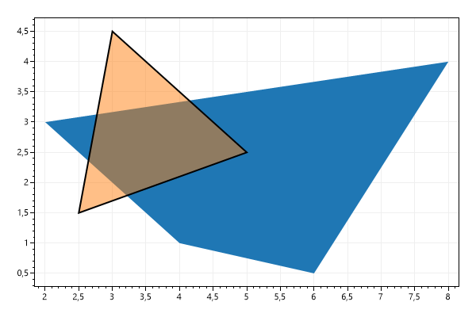
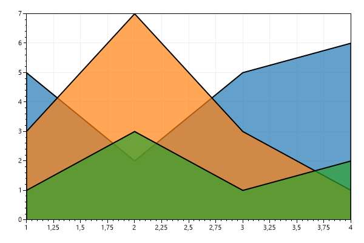
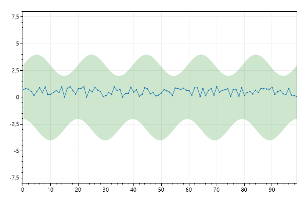
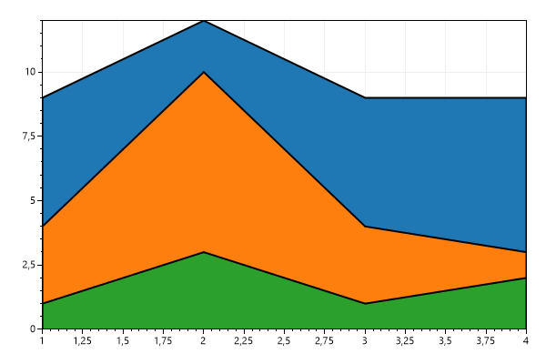
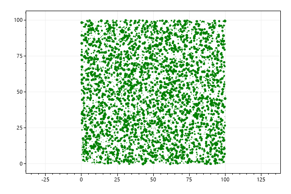

<html><head>  <title>Plot Type: Polygon - ScottPlot 4.1 Cookbook</title>  <link href=https://cdn.jsdelivr.net/npm/bootstrap@5.1.3/dist/css/bootstrap.min.css rel=stylesheet></head><body class=bg-light>  <div class='container' style='max-width:1000px'>    <div class='my-4'><code>THIS PAGE IS FOR TESTING ONLY</code></div>    <div class='display-4'>Plot Type: Polygon - ScottPlot 4.1 Cookbook</div>    <div class='fs-5'><i>Polygons are 2D shapes made from pairs of X/Y points.</i></div>    <article class='bg-light shadow rounded my-5'>    <div class='p-3 rounded bg-white'>      This page contains recipes for the <i>Polygon</i> category.<br>Visit the <a href='../../index.dev.html'>Cookbook Home Page</a> to view all cookbook recipes.
<h3 class='mt-5' id='polygon-quickstart'>Polygon Quickstart</h3>
<div>Polygons are 2D shapes made from pairs of X/Y points. The last point connects back to the first point, forming a closed shape. Polygons can be optionally outlined and optionally filled. Colors with semitransparency are especially useful for polygons.</div>
<pre class='bg-light border rounded p-3'>var plt = new ScottPlot.Plot(600, 400);

double[] xs1 = { 2, 8, 6, 4 };
double[] ys1 = { 3, 4, 0.5, 1 };
plt.AddPolygon(xs1, ys1);

double[] xs2 = { 3, 2.5, 5 };
double[] ys2 = { 4.5, 1.5, 2.5 };
plt.AddPolygon(xs2, ys2, plt.GetNextColor(.5), lineWidth: 2);

plt.SaveFig("polygon_quickstart.png");</pre>


<h3 class='mt-5' id='filled-line-plot'>Filled Line Plot</h3>
<div>Polygons can be used to create 2D shapes resembling filled line plots. When mixed with semitransprent fills, these can be useful for displaying data.</div>
<pre class='bg-light border rounded p-3'>var plt = new ScottPlot.Plot(600, 400);

// create sample data
double[] xs = { 1, 2, 3, 4 };
double[] ys1 = { 1, 3, 1, 2 };
double[] ys2 = { 3, 7, 3, 1 };
double[] ys3 = { 5, 2, 5, 6 };

// pad data to turn a line into a shaded region
xs = Tools.Pad(xs, cloneEdges: true);
ys1 = Tools.Pad(ys1);
ys2 = Tools.Pad(ys2);
ys3 = Tools.Pad(ys3);

// plot the padded data points as polygons
plt.AddPolygon(xs, ys3, plt.GetNextColor(.7), lineWidth: 2);
plt.AddPolygon(xs, ys2, plt.GetNextColor(.7), lineWidth: 2);
plt.AddPolygon(xs, ys1, plt.GetNextColor(.7), lineWidth: 2);

// use tight margins so we don't see the edges of polygons
plt.AxisAuto(0, 0);

plt.SaveFig("polygon_filledLinePlot.png");</pre>


<h3 class='mt-5' id='fill-between-curves'>Fill Between Curves</h3>
<div>A shaded area between two curves can be created by enclosing the area as a polygon. For this to work the two curves must share the same X points.</div>
<pre class='bg-light border rounded p-3'>var plt = new ScottPlot.Plot(600, 400);

Random rand = new(0);
int pointCount = 100;
double[] xs = ScottPlot.DataGen.Consecutive(pointCount);

// plot a shaded region
double[] lower = ScottPlot.DataGen.Sin(pointCount, 5, offset: 3);
double[] upper = ScottPlot.DataGen.Cos(pointCount, 5, offset: -3);
var poly = plt.AddFill(xs, lower, upper);
poly.FillColor = Color.FromArgb(50, Color.Green);

// plot a line within that region
double[] ys = ScottPlot.DataGen.Random(rand, pointCount);
var sig = plt.AddSignal(ys);
sig.Color = plt.Palette.GetColor(0);

plt.Margins(0, .5);

plt.SaveFig("polygon_fillBetween.png");</pre>


<h3 class='mt-5' id='stacked-filled-line-plot'>Stacked Filled Line Plot</h3>
<div>A stacked filled line plot effect can be achieved by overlapping polygons.</div>
<pre class='bg-light border rounded p-3'>var plt = new ScottPlot.Plot(600, 400);

// create sample data
double[] xs = { 1, 2, 3, 4 };
double[] ys1 = { 1, 3, 1, 2 };
double[] ys2 = { 3, 7, 3, 1 };
double[] ys3 = { 5, 2, 5, 6 };

// manually stack plots
ys2 = Enumerable.Range(0, ys2.Length).Select(x => ys2[x] + ys1[x]).ToArray();
ys3 = Enumerable.Range(0, ys2.Length).Select(x => ys3[x] + ys2[x]).ToArray();

// pad data to turn a line into a shaded region
xs = Tools.Pad(xs, cloneEdges: true);
ys1 = Tools.Pad(ys1);
ys2 = Tools.Pad(ys2);
ys3 = Tools.Pad(ys3);

// plot the padded data points as polygons
plt.AddPolygon(xs, ys3, lineWidth: 2);
plt.AddPolygon(xs, ys2, lineWidth: 2);
plt.AddPolygon(xs, ys1, lineWidth: 2);

// use tight margins so we don't see the edges of polygons
plt.AxisAuto(0, 0);

plt.SaveFig("polygon_stackedFilledLinePlot.png");</pre>


<h3 class='mt-5' id='many-polygons'>Many Polygons</h3>
<div>Special rendering optimizations are available to display a large number of polygons.</div>
<pre class='bg-light border rounded p-3'>var plt = new ScottPlot.Plot(600, 400);

// create a list of random polygons
List<List<(double x, double y)>> polys = new List<List<(double x, double y)>>();
int polygonCount = 5_000;
int pointsPerPolygon = 100;
Random rand = new Random(0);
for (int i = 0; i < polygonCount; i++)
{
    // random placement
    double polyX = rand.NextDouble() * 100;
    double polyY = rand.NextDouble() * 100;

    // points are random locations around a circle of random size
    double polyR = rand.NextDouble();
    double[] xs = Enumerable.Range(0, pointsPerPolygon).Select(x => polyR * Math.Cos(2.0 * Math.PI * x / pointsPerPolygon) + polyX).ToArray();
    double[] ys = Enumerable.Range(0, pointsPerPolygon).Select(x => polyR * Math.Sin(2.0 * Math.PI * x / pointsPerPolygon) + polyY).ToArray();

    // add this polygon to the list
    List<(double x, double y)> thisPolygon = xs.Zip(ys, (xp, yp) => (xp, yp)).ToList();
    polys.Add(thisPolygon);
}

// plot the list of polygons with one step
plt.AddPolygons(polys, fillColor: Color.Green);

// ensure X and Y pixel scales are the same (so circles aren't ovals)
plt.AxisScaleLock(true);

plt.SaveFig("polygon_polygons.png");</pre>


    </div>    </article>  </div></body></html>